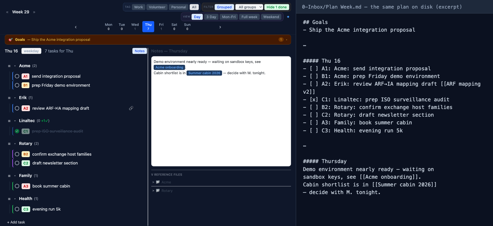

For AI developers
Running agents multiplies the threads you have to hold in your head. Nowspace was built to take that weight off — a structured, calm way to track agent work, review output, and hand things over cleanly.
Agents don't reduce your workload. They change its shape.
One developer can now run five parallel streams of work — but every stream still needs direction, review, and follow-up. The result is a new kind of stress: half-finished threads everywhere, context scattered across terminals and chats, and nothing you could hand to a colleague (or to tomorrow's you) without an hour of explaining.
Too many open loops
Each agent run is another loop your mind keeps rehearsing. Unfinished, unreviewed, unrecorded — that's the recipe for 3 a.m. wake-ups.
Context lives nowhere
Decisions and results end up buried in chat scrollback. When a thread resumes next week, the context is gone and you rebuild it from memory.
Handover is painful
Passing work to a teammate — or to another agent — means reconstructing state by hand. There's no shared, durable record of where things stand.
Plain files are the interface everyone shares
Nowspace's substrate is plain markdown in your own Obsidian vault — and that turns out to be exactly what agent work needs. Anything that can read a file can read your plan. Including your agents.
- One plan, every thread. Each agent stream is a task group in your day. Priorities (A/B/C) tell you what to review first; the hourglass marks what's blocked waiting on a run.
- Agent output lands as linked notes. Agents write their results into the vault as markdown; the plan holds pointers to them. You review on your schedule, not theirs.
- Handover is just... the file. Because state lives in structured notes rather than your head, handing a thread to a colleague — or feeding it to the next agent — is passing a link, not writing an essay.
- Separated contexts, no leaks. One context per engagement. Client detail never lives in the plan — the plan holds pointers into separated contexts, so nothing crosses a boundary that shouldn't.

The vault is the substrate: the app view and the markdown file are the same plan. Agent output lands here as linked notes for review.
The human side keeps you sane
The same tools that make the philosophy work day to day apply doubly when you're orchestrating agents: the focus horn and pomodoro for one review at a time, ultra-focus to silence the other streams, the white elephant to break down the intimidating thread, and horizons instead of deadlines — so a day with your A-reviews done is a good day, whatever the agents got up to.
Put the threads down. Keep the thread.
Free and open — and if it doesn't fit your workflow, improvements are welcome on GitHub, time permitting.